Liczba warstw: uzupełnić
Ukrytych neuronów: uzupełnić
Oczekiwany błąd podczas uczenia: uzupełnić
Tablic uczących: uzupełnić
Tablic testowych: 20
Poprawnie wykryto znaki na tablicach: 13 z 20 (65.0%)
Poprawnie rozpoznano znaków: 65 z 78 (83.3%)
| Oczekiwano | S | Z | 8 | 2 | 0 | 8 |
|---|---|---|---|---|---|---|
| Otrzymano | S | Z | 8 | 2 | 0 | 8 |
| Prawdopodobieństwo | 0.99 | 1.00 | 1.00 | 1.00 | 0.75 | 0.98 |
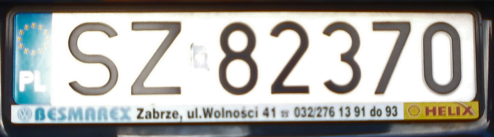
| Oczekiwano | S | Z | 8 | 2 | 3 | 7 |
|---|---|---|---|---|---|---|
| Otrzymano | G | Z | 8 | 2 | S | 7 |
| Prawdopodobieństwo | 0.43 | 1.00 | 0.97 | 1.00 | 0.07 | 1.00 |
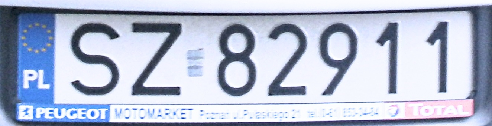
| Oczekiwano | S | Z | 8 | 2 | 9 | 1 |
|---|---|---|---|---|---|---|
| Otrzymano | S | Z | 8 | 2 | 9 | 1 |
| Prawdopodobieństwo | 0.97 | 1.00 | 1.00 | 0.98 | 0.93 | 1.00 |
| Oczekiwano | S | Z | 8 | 3 | 7 | 1 |
|---|---|---|---|---|---|---|
| Otrzymano | S | Z | 8 | 3 | Z | 1 |
| Prawdopodobieństwo | 1.00 | 1.00 | 0.48 | 0.22 | 0.53 | 1.00 |
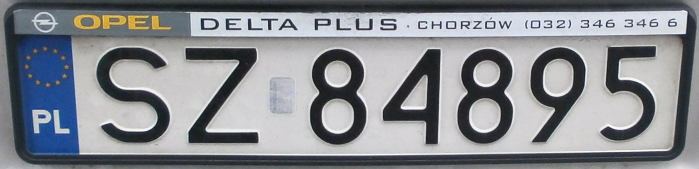
| Oczekiwano | S | Z | 8 | 4 | 8 | 9 |
|---|---|---|---|---|---|---|
| Otrzymano | S | Z | 8 | 4 | 8 | 9 |
| Prawdopodobieństwo | 1.00 | 1.00 | 0.46 | 0.95 | 0.99 | 0.88 |
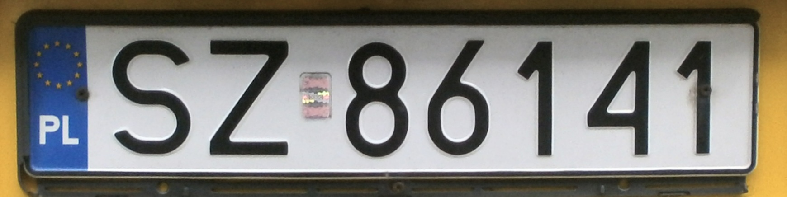
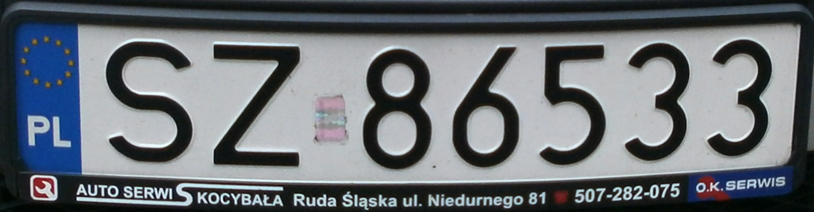
| Oczekiwano | S | Z | 8 | 6 | 5 | 3 |
|---|---|---|---|---|---|---|
| Otrzymano | S | Z | 8 | 6 | 5 | 3 |
| Prawdopodobieństwo | 1.00 | 0.80 | 0.94 | 1.00 | 0.98 | 0.97 |
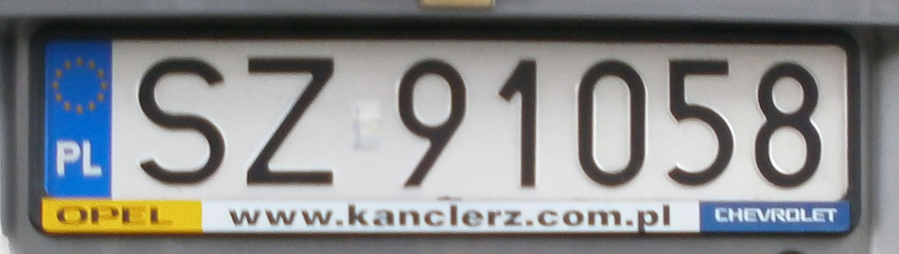
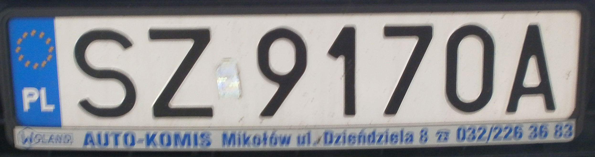
| Oczekiwano | S | Z | 9 | 1 | 7 | 0 |
|---|---|---|---|---|---|---|
| Otrzymano | S | Z | 9 | 1 | 7 | 0 |
| Prawdopodobieństwo | 1.00 | 0.78 | 0.97 | 1.00 | 0.79 | 1.00 |
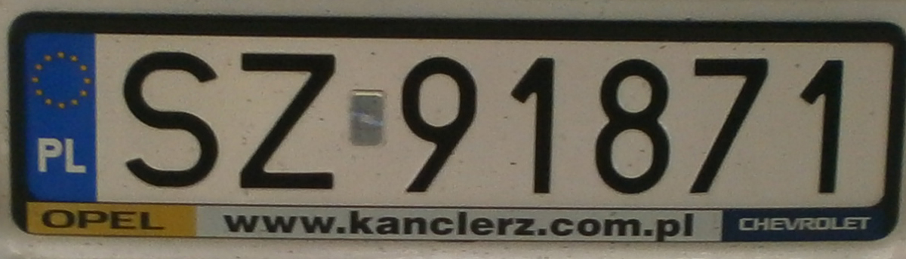
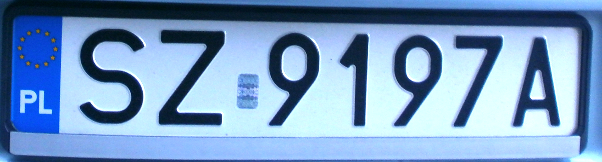
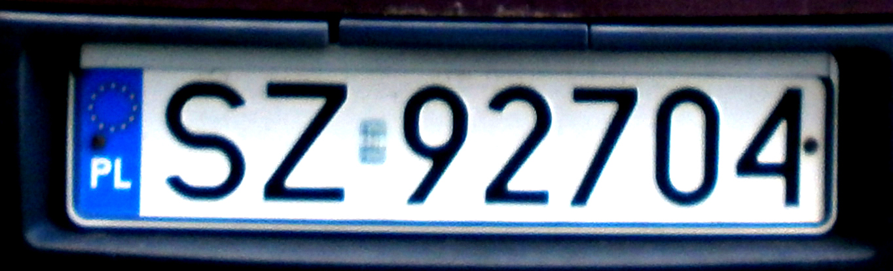
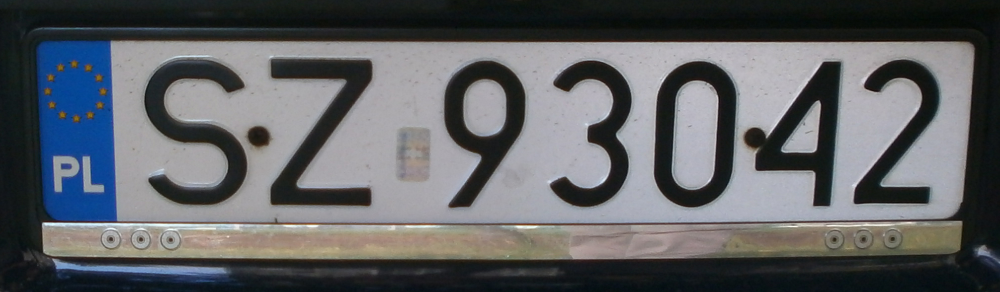
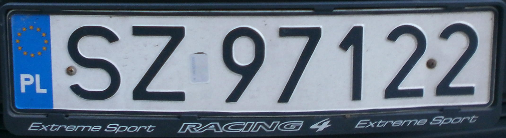
| Oczekiwano | S | Z | 9 | 7 | 1 | 2 |
|---|---|---|---|---|---|---|
| Otrzymano | S | Z | 9 | 7 | 1 | 2 |
| Prawdopodobieństwo | 1.00 | 1.00 | 0.65 | 0.96 | 0.55 | 1.00 |
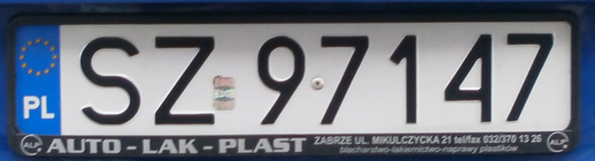
| Oczekiwano | S | Z | 9 | 8 | 4 | 8 |
|---|---|---|---|---|---|---|
| Otrzymano | S | 7 | 9 | 8 | 4 | 8 |
| Prawdopodobieństwo | 1.00 | 0.72 | 0.65 | 1.00 | 0.99 | 0.82 |
| Oczekiwano | S | Z | 9 | 9 | 3 | 7 |
|---|---|---|---|---|---|---|
| Otrzymano | S | Z | 7 | 0 | 3 | 0 |
| Prawdopodobieństwo | 1.00 | 0.97 | 0.64 | 0.45 | 0.23 | 0.27 |
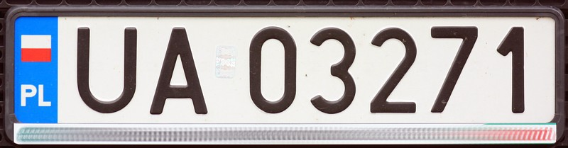
| Oczekiwano | U | A | 0 | 3 | 2 | 7 |
|---|---|---|---|---|---|---|
| Otrzymano | Z | A | 0 | S | 2 | 7 |
| Prawdopodobieństwo | 0.05 | 0.98 | 1.00 | 0.09 | 1.00 | 0.98 |
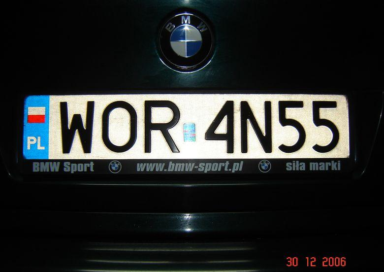
| Oczekiwano | W | O | R | 4 | N | 5 |
|---|---|---|---|---|---|---|
| Otrzymano | R | 6 | R | 4 | Z | 5 |
| Prawdopodobieństwo | 0.30 | 0.22 | 0.70 | 0.97 | 0.77 | 0.96 |
| Oczekiwano | W | Y | 2 | 3 | 5 | 4 |
|---|---|---|---|---|---|---|
| Otrzymano | R | Y | 2 | 3 | 5 | 4 |
| Prawdopodobieństwo | 0.33 | 0.75 | 0.96 | 0.36 | 0.99 | 0.97 |